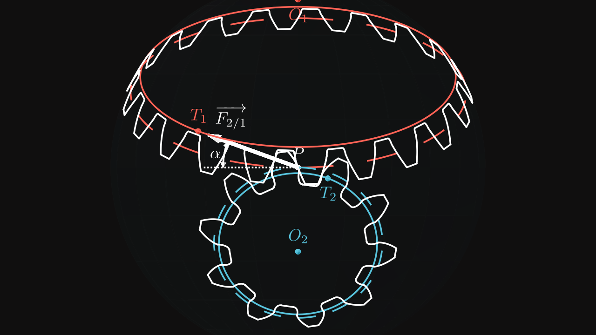
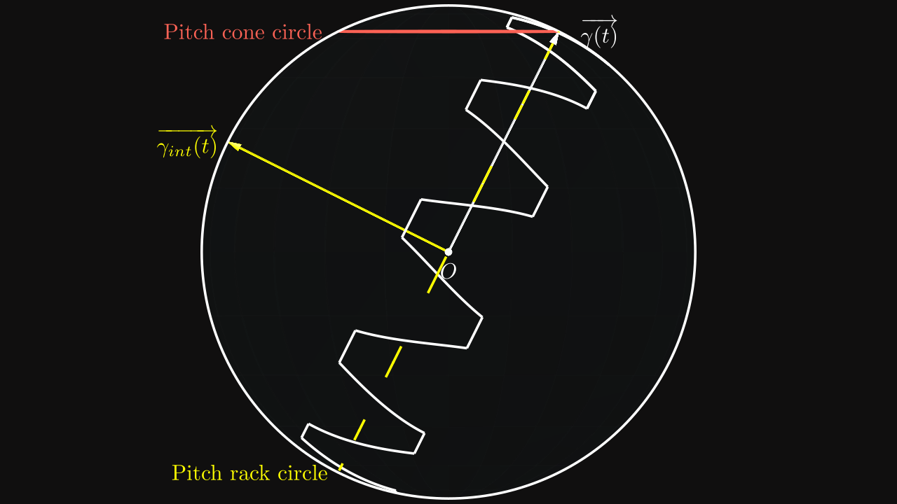
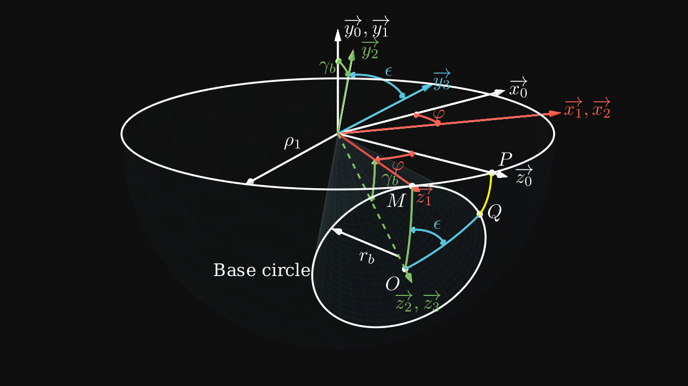
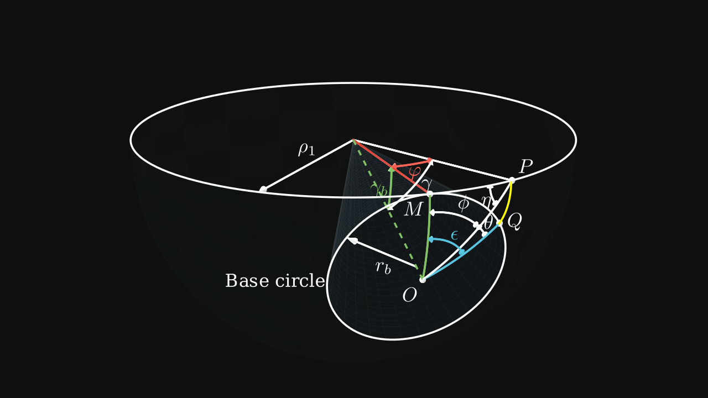

In this part, we will see how to fully calculate the dimensions of a bevel gear tooth, such as the interference function and more useful parameters.
Interference function
In the same way as spur gears, bevel gear profiles are involute function rolling on a spherical rack as we saw in the first part. It involves potential interferences between teeth which has to be determined.
The rack is composed of a height (associated to \(a\)) and a width (associated to \(b\)). Both coefficients \(a\) and \(b\) can form an offset vector, we set \(\alpha\) and \(\beta\) the offset angles: \[ \alpha = \frac{a}{\rho_1} \] \[ \beta = \frac{b}{\rho_1} \]
The rack follows the same trajectory as the spherical involute function on the point on the rack pitch circle.

In order to get the right positions with offsets, a third vector \(\overrightarrow{\gamma_{int}(t)}\) in yellow is introduced as the cross product of \(\overrightarrow{\gamma(t)}\) and \(\overrightarrow{\gamma'(t)}\):
\[ \overrightarrow{\gamma_{int}(t)} = \overrightarrow{\gamma(t)} \land \overrightarrow{\gamma'(t)} = \begin{pmatrix} -\cos(\gamma_p) \cos(t) \\ -\cos(\gamma_p) \sin(t) \\ \sin(\gamma_p) \end{pmatrix} \]
In opposite of the spherical involute function, the cone angle used here is the pitch one \(\gamma_p\) and not the base one \(\gamma_b\) because the pitch cone base of the pinion is rolling on the pitch circle of the rack.
Now the interference function can be introduced as: \[ \boxed{ \overrightarrow{\theta(t)} = \rho_1 \left( \cos(\alpha) \cdot \overrightarrow{\theta(t + t_0)} + \sin(\alpha) \cdot \overrightarrow{\gamma_{int}(t + t_0)} \right) } \] where \(t_0\) is the angular offset which contains \(\beta\).
Determination of \(\alpha\) and \(\beta\)
Previously, we found the relation to compute the the addendum cone angle: \[ \gamma_f = \gamma_p + \tan^{-1}\left(\frac {k_a m} {\rho_1}\right) = \gamma_p + \tan^{-1}\left(\frac {2 k_a \sin(\gamma_p)} z\right) \]
In other words, \(\alpha\) is the offset angle to \(\gamma_p\): \[ \boxed{\alpha = \tan^{-1}\left(\frac {k_a m} {\rho_1}\right) = \tan^{-1}\left(\frac {2 k_a \sin(\gamma_p)} z\right)} \]
For the angle \(\beta\), we have to resort to computations in order to get its value.
Useful relations and expressions


By using angles of rotation on figure 2, the involute function can be found again by using the expression of \(P\) on the system \(S_0(\vec x_0, \vec y_0, \vec z_0)\) and multiplying by rotation matrices \(S_0 \to S_1\), \(S_1 \to S_2\), \(S_2 \to S_3\) between systems.
By taking the length of the arc \(MP\), which is the same length as \(MQ\), we notice that:
\[ \rho_1 \cdot \varphi = r_b (\phi + \theta) = \rho_1 \sin(\gamma_b) \times \epsilon \]
So we find the following relation:
\[ \boxed{ \varphi = \epsilon \sin(\gamma_b) \quad \text{(1)} } \]
The variable \(\epsilon\) is the same variable as \(t\) found in the involute function.
With the law of cosines, the angle \(\gamma\) can be expressed as:
\[ \cos(\gamma) = \cos(\varphi) \cos(\gamma_b) + \sin(\varphi) \sin(\gamma_b) \cos(90°) = \cos(\varphi) \cos(\gamma_b) \]
and
\[ \cos(\varphi) = \cos(\gamma_b) \cos(\gamma) + \sin(\gamma_b) \sin(\gamma) \cos(\phi) \]
With the law of sines, the angle \(\gamma\) can be also expressed as: \[ \frac {\sin(\varphi)} {\sin(\phi)} = \frac {\sin(\gamma)} {\sin(90°)} = \frac {\sin(\gamma_b)} {\sin(\eta)} \] In other words: \[ \sin(\gamma) = \frac {\sin(\varphi)} {\sin(\phi)} \]
By using these both laws, we get: \[ \cos(\varphi) = \cos(\varphi) \cos^2(\gamma_b) + \frac {\sin(\gamma_b) \sin(\varphi)} {\tan(\phi)} \] which can be simplified as: \[ \tan(\varphi) = \sin(\gamma_b) \tan(\phi) \]
By using the relation \((1)\) and knowing \(\epsilon = (\phi + \theta)\), the angle \(\theta\) can be computed with:
\[ \tan(\epsilon \sin(\gamma_b)) = \sin(\gamma_b) \tan(\phi) \]
\[ \boxed{ \theta = \frac {\tan^{-1}(\sin(\gamma_b) \tan(\phi))} {\sin(\gamma_b)} - \phi \quad \text{(2)} } \]
We can also use the relation \((1)\) to get: \[ \tan(\varphi) = \tan(\epsilon \sin(\gamma_b)) \] and \[ \cos(\varphi) = \frac {\cos(\gamma)} {\cos(\gamma_b)} \] \[ \sin(\varphi) = \sin(\phi) \sin(\gamma) \] which leads to: \[ \tan(\varphi) = \frac {\sin(\varphi)} {\cos(\varphi)} = \frac {\sin(\gamma) \sin(\phi) \cos(\gamma_b)} {\cos(\gamma)} = \tan(\gamma) \sin(\phi) \cos(\gamma_b) \]
The angle \(\gamma\) can be expressed as:
\[ \boxed{ \tan(\gamma) = \frac {\tan \left[ \left( \theta + \phi \right) \sin(\gamma_b) \right]} {\sin(\phi) \cos(\gamma_b)} \quad \text{(3)} } \]
When \(\gamma = \gamma_p\) and \(\phi = \phi_p\), the point \(P\) is on the pitch cone circle. Therefore:
\[ \sin(\gamma_b) \tan(\phi_p) = \tan(\gamma_p) \sin(\phi_p) \cos(\gamma_b) \] With several simplications, we get: \[ \boxed{\cos(\phi_p) = \frac {\tan(\gamma_b)} {\tan(\gamma_p)}} \]
And this expression helps to determine \(\theta_p\): \[ \theta_p = \frac {\tan^{-1}(\sin(\gamma_b) \tan(\phi_p))} {\sin(\gamma_b)} - \phi_p \]